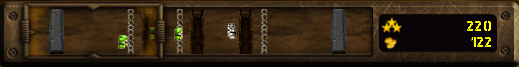
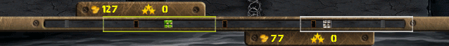
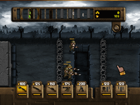
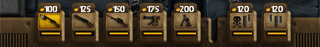
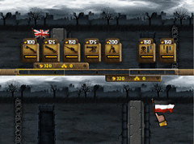
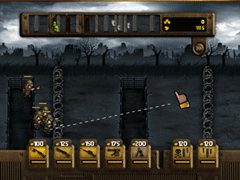

5 |
Comment jouer |
 |
|
Trenches Generals est un jeu de stratégie et d'action dans lequel vous devez déployer des unités sur le front, progresser en terrain hostile pour atteindre et détruire la base ennemie.
- En déplaçant le curseur de la manette Wii Remote contre le bord de l'écran dans la direction voulue.
- En appuyant sur
- En utilisant la loupe sur la minicarte en mode solo ou 2 joueurs (voir plus bas).
 La minicarte en partie solo
 La minicarte en partie à 2 joueurs
Dans Trenches, l'objectif principal est d'entraîner des unités et de les faire parvenir sur le bord opposé du champ de bataille.

Pour entraîner une unité, appuyez sur
 La barre d'unités
En mode 2 joueurs, la barre d'unité ne s'affiche pas en permanence. Appuyez sur pour l'afficher ou la faire disparaître.
 La barre d'unités en mode 2 joueurs
Dans Trenches, il est très facile de commander ses unités.
Sélectionnez une unité en plaçant le curseur de la manette Wii Remote dessus et appuyez sur Toujours avec  Tracez un ligne de déplacement pour ordonner à vos unités de faire mouvement
Déplacer toutes vos unités à l'écran avec les Ordres globaux :
Les Ordres globaux sont un moyen simple de déplacer toutes vos unités vers la tranchée suivante en un seul geste. Il est inutile de sélectionner les unités une par une pour leur donner ensuite des ordres.
Pour donner un ordre global, appuyez sur
Tirs d'artillerie et frappes de gaz de combats sont disponibles dans la barre d'unités.
Appuyez sur
Appuyez sur
Appuyez sur
Appuyez dessus de nouveau pour revenir à la vitesse normale. En mode solo, vous pouvez également appuyer sur pour accélérer le jeu. |
 Bienvenue dans Trenches Generals ! Combattez dans les tranchées de la Première Guerre mondiale pour vaincre votre adversaire !
Bienvenue dans Trenches Generals ! Combattez dans les tranchées de la Première Guerre mondiale pour vaincre votre adversaire ! sur la manette Wii Remote.
sur la manette Wii Remote. sur l'icône d'unité correspondant au type souhaité. Elle apparaît à l'extrémité du champ de bataille, sortant de la base du joueur.
sur l'icône d'unité correspondant au type souhaité. Elle apparaît à l'extrémité du champ de bataille, sortant de la base du joueur. et secouez la manette Wii Remote :
et secouez la manette Wii Remote : Pour accélérer le jeu en cours de partie, appuyer sur
Pour accélérer le jeu en cours de partie, appuyer sur  |
 |
 |